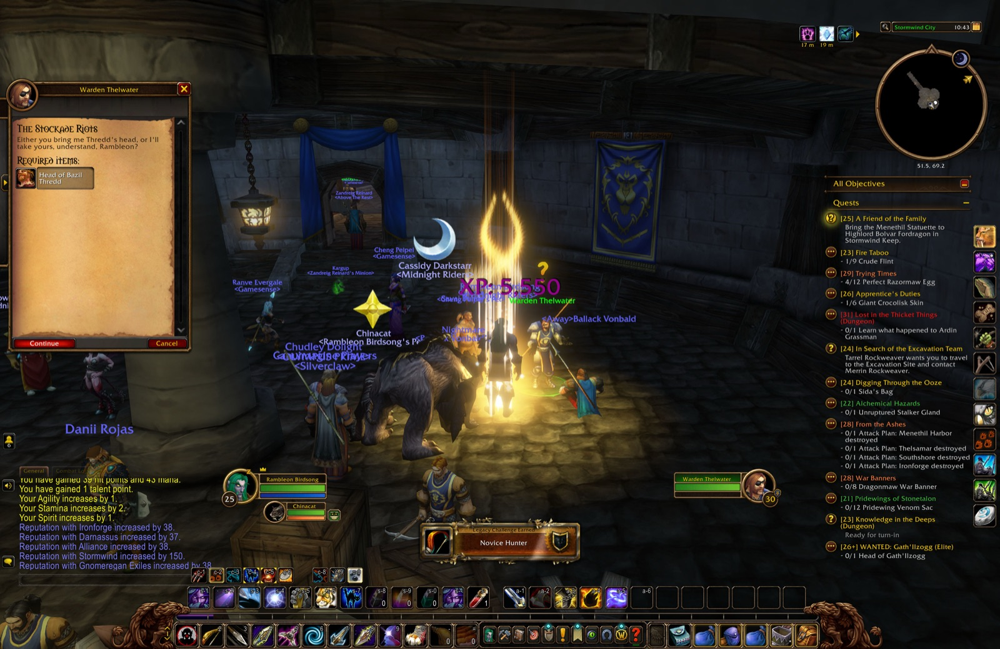
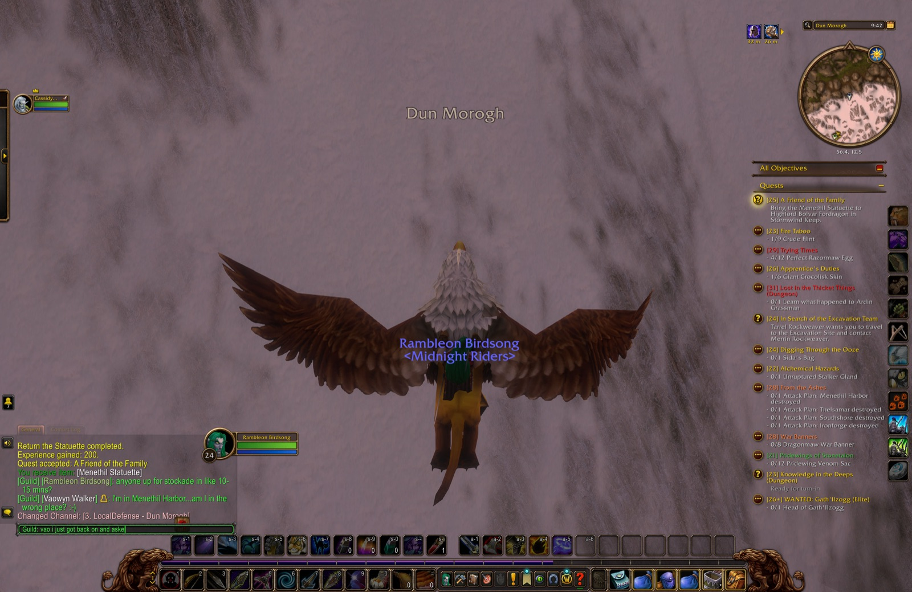
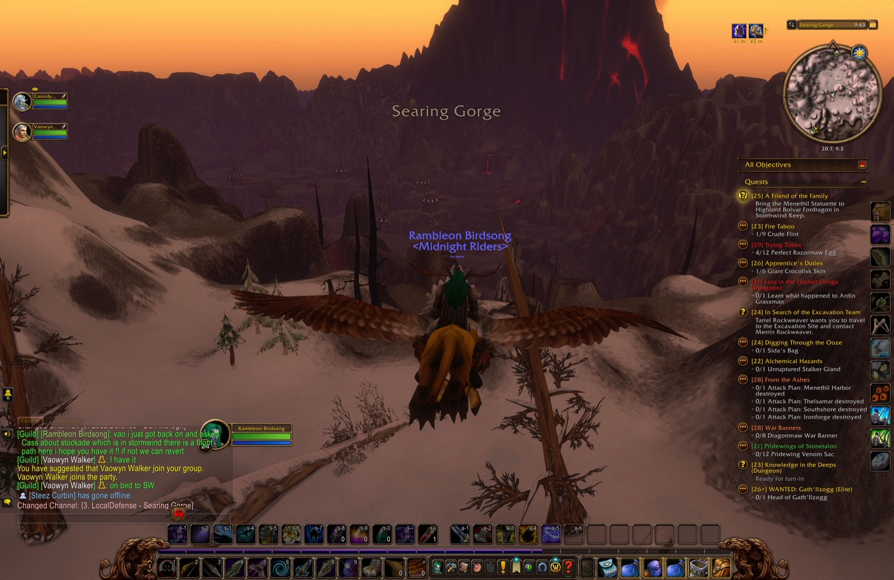
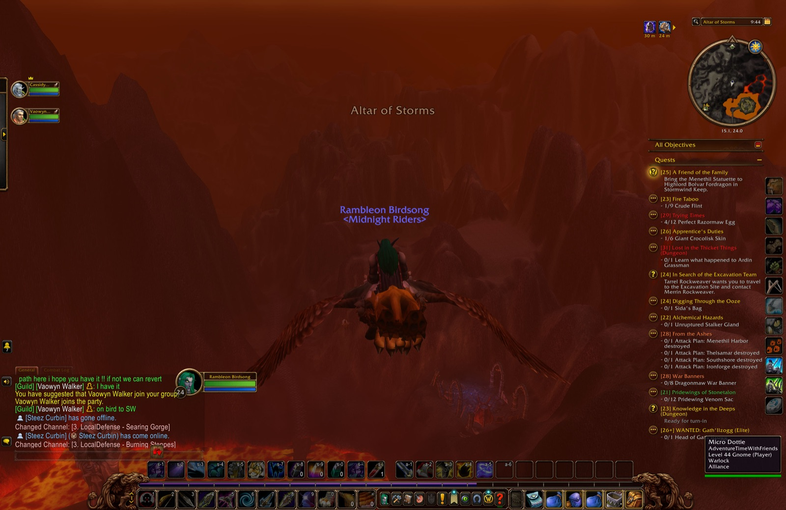
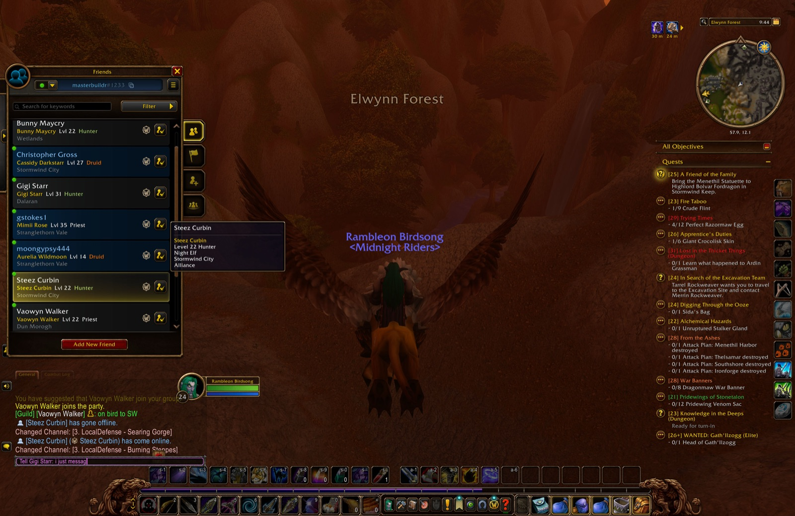
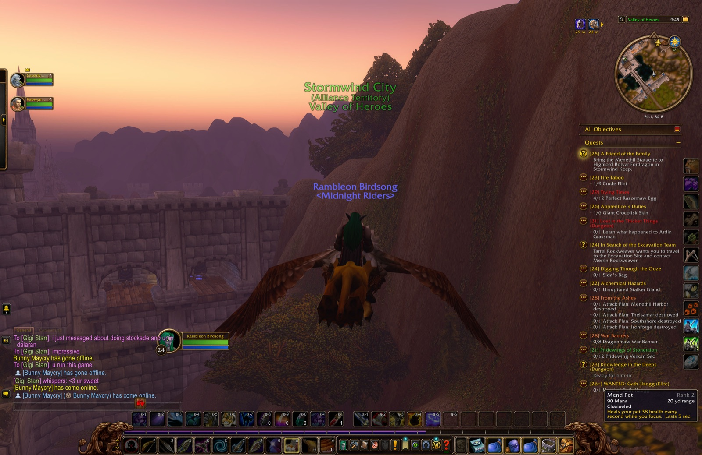
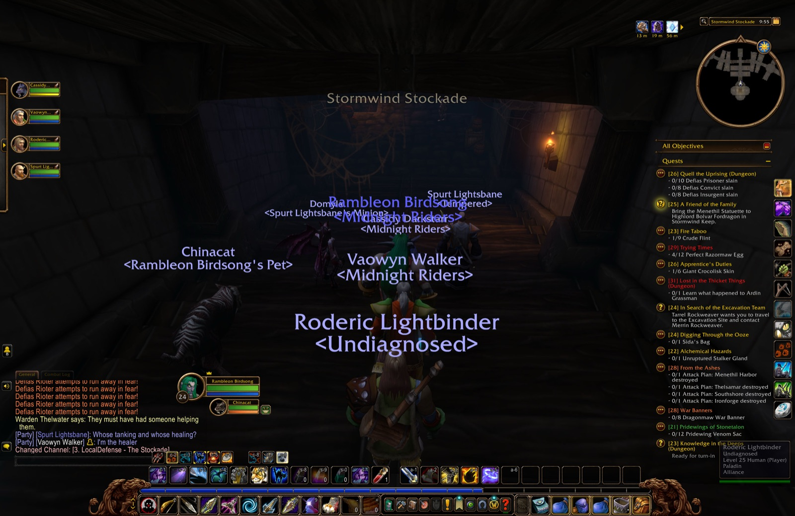

| Quest | Turned in at | Lv |
|---|---|---|
| Wetlands | ||
| Young Crocolisk Skins | Menethil Harbor | 24 |
| The Greenwarden | The Green Belt | 24 |
| Tramping Paws | The Green Belt | 24 |
| Claws from the Deep | Menethil Harbor | 24 |
| Reclaiming Goods | Bluegill Marsh | 24 |
| The Search Continues | Bluegill Marsh | 24 |
| Search More Hovels | Bluegill Marsh | 24 |
| Return the Statuette ×2 | Menethil Keep | 24 |
| Stormwind City | ||
| Quell the Uprising | 24 | |
| The Stockade Riots | 25 | |
| The Curious Visitor | Cathedral Square | 25 |
| Shadow of the Past | SI:7 | 25 |
| A Friend of the Family | Stormwind Keep | 25 |
| Look to an Old Friend | Trade District | 25 |
| Quest | Picked up at |
|---|---|
| Lost in the Thicket Things | Menethil Harbor |
| Apprentice's Duties | Menethil Harbor |
| Highland Hides | Menethil Harbor |
| Razormaw Needling | Wetlands |
| Trying Times | Wetlands |
| Fire Taboo | The Green Belt |
| The Color of Blood | Old Town |
| Oh Brother... | Dwarven District |
| A Friend of the Family | Stormwind Keep |
| Infiltrating the Castle | Trade District |
| Quest | Picked up at | Since |
|---|---|---|
| On Guard in Stonetalon | Astranaar | Chapter 1 |
| The Tower of Althalaxx | Maestra's Post | Chapter 1 |
| ... and that note you found | Alexston Farmstead | Chapter 2 |
| Blackrock Blockade | Lakeshire | Chapter 2 |
| WANTED: Gath'Ilzogg | Lakeshire | Chapter 2 |
| WANTED: Incinerator Gar'im | Lakeshire | Chapter 2 |
| The Coastal Menace | Sentinel Hill | Chapter 2 |
| Messenger to Darkshire | Lakeshire | Chapter 2 |
| Gyrodrillmatic Excavationators | Dwarven District | Chapter 3 |
| Claiming Arathi Basin | Stormwind Keep | Chapter 3 |
| Save Techbot's Brain! | Tinker Town | Chapter 3 |
| Find Bingles | Tinker Town | Chapter 3 |
| The Day After | Tinker Town | Chapter 3 |
| Knowledge in the Deeps | The Forlorn Cavern | Chapter 4 |
| What Comes Around... | Lakeshire | Chapter 4 |
| Pridewings of Stonetalon | Astranaar | Chapter 5 |
| Journey to Stonetalon Peak | Astranaar | Chapter 5 |
| Culling the Threat | Astranaar | Chapter 5 |
| Bathran's Hair | Maestra's Post | Chapter 5 |
| Blackfathom Villainy | The Pool of Ask'ar | Chapter 5 |
| An Aggressive Defense | Astranaar | Chapter 5 |
| Raene's Cleansing | Astranaar | Chapter 5 |
| The Third Fleet | Menethil Harbor | Chapter 5 |
| Bloom of the Heavens | Menethil Harbor | Chapter 5 |
| War Banners | Menethil Keep | Chapter 5 |
| From the Ashes | Menethil Keep | Chapter 5 |
| Alchemical Hazards | Menethil Harbor | Chapter 5 |
| Digging Through the Ooze | Menethil Harbor | Chapter 5 |
| In Search of the Excavation Team | Menethil Harbor | Chapter 5 |
As far as Rambleon knows: a quest picked up before it was installed, or abandoned before it recorded that, is not here.
Canuimagine Prayers has endorsed Nerd Herd as Leader via [Endorsements]
Father Issues thanks Karthas Lightbearer.
Canuimagine Prayers has endorsed Murrs Dinkwabble as Helpful via [Endorsements]





